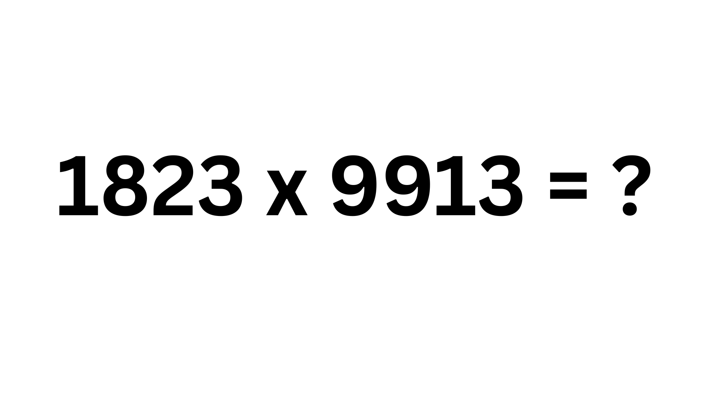
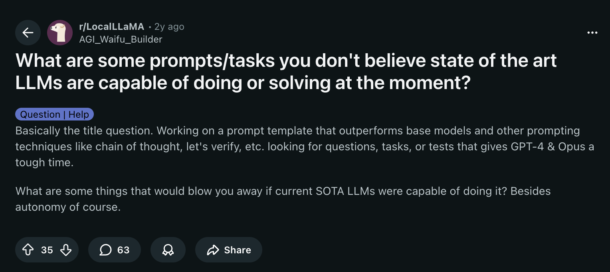

LLMs and 4-Digit Multiplication

Recently, I came across this Reddit thread from 2 years ago:

One response to this post was the following: > what I call real reasoning : tasks where only the right premises lead to the right conclusions. One example is 4 by 4 digit multiplication. No LLM can do it and give always the correct results no matter how it’s promoted (without giving it a explicit algorithm or resorting to using “tools”).
LLM are unable to deal with compositionality which is required for these tasks.
Since this post (and comment) were made two years ago, I was wondering how current LLMs measure up to this task. In this blog post, I’ll compare the responses of GPT-4o (old) and GPT-5.1 (new). > compute 1823 x 9913 without using any tools.
(The correct answer is 18,071,399, by the way)
How do LLMs do math?
I thought this was an important concept to cover – because I’m telling the LLM to not use any tools (e.g. a calculator), these models have to generate the answer somehow – but how?
Because LLMs are next-token predictors, when you ask for a multiplication product, the model isn’t actually running math algorithms – instead, itt’s predicting what a mathematically plausible answer would look like based on patterns it has seen in its training data. Some models are able to break down math problems into logical steps, but others lack this multi-step/chain of reasoning unless you explicitly force them to “think out loud.” Therefore, LLMs don’t really “know” math, but they can approximate some mathematical structures pretty well.
GPT-5.1
GPT-5.1 answered correctly:
Let’s do this cleanly by hand, breaking the multiplication into digestible pieces rather than trying to hold everything in working memory.
We want:
1823 × 9913
A friendly way is to rewrite 9913 as 10,000 − 87, because multiplying by 10,000 is trivial and subtracting the correction term is easier than multiplying directly.
Step 1: Multiply 1823 × 10,000
Just append four zeros:
1823 × 10,000 = 18,230,000
Step 2: Compute the correction term: 1823 × 87
Break 87 into 100 − 13 (again to make mental handling easier):
1823 × 100 = 182,300
1823 × 13
Compute 1823 × 13 as 1823 × (10 + 3):
- 1823 × 10 = 18,230
- 1823 × 3 = 5,469 Add them: 18,230 + 5,469 = 23,699
So:
1823 × 13 = 23,699
Now subtract that from the ×100 result:
182,300 − 23,699 = 158,601
Thus:
1823 × 87 = 158,601
Step 3: Combine everything
Since 9913 = 10,000 − 87:
1823 × 9913 = 18,230,000 − 158,601
Now subtract carefully:
18,230,000 − 158,601 = 18,071,399
✅ Final Answer: 18,071,399
If you want, I can also show a classical long-multiplication layout to verify it.
In this response, I was surpised that the LLM took the step to first compute 1823 × 10,000 and then subtract the offset. Going back to the previous part about LLMs not really “knowing” math, I feel like this breaking down of the problem really exemplifies that – GPT-5.1 may not really “know” the computations, but it can identify and execute patterns (e.g. first computing 1823 × 10,000 and appending four zeros to perform this multiplication) that allow it to get to the right answer.
GPT-4o
On the other hand, GPT-4o got the answer wrong:
Let’s multiply 1823 × 9913 manually using long multiplication.
Step 1: Break 9913 into digits
We’ll multiply 1823 by each digit of 9913, starting from the right:
[ \[\begin{align*}
&\phantom{+}1823 \times 3 = \quad ? \
&\phantom{+}1823 \times 10 = \quad 1823 \times 1 \text{ (shifted one place)} \
&\phantom{+}1823 \times 900 = \quad 1823 \times 9 \text{ (shifted two places)} \
&\phantom{+}1823 \times 9000 = \quad 1823 \times 9 \text{ (again, shifted three places)} \
\end{align*}\]&1823 =
&1823 =
&1823 =
\end{align*}]
Step 2: Multiply each digit
1823 × 3 [ 1823 = 5469]
1823 × 1 (tens place) Shift left by 1 digit: [ 1823 = 1823 ]
1823 × 9 (hundreds place) [ 1823 = 16407 shift by two digits = 1640700]
1823 × 9 (thousands place) Same as above but shift three digits: [ 1823 × 9 = 16407 → shift = 16407000]
Step 3: Add them together
[ \[\begin{align*}
&\phantom{+} \ \ \ \ \ \ \ \ \ \ \ \ \ \ \ \ \ \ 5469 \
+&\phantom{ \ \ \ \ \ \ \ \ \ }18230 \
+&\phantom{ \ \ \ \ \ \ }1640700 \
+&\phantom{ \ \ \ \ \ }16407000 \
\hline
=&18072799
\end{align*}\] }1640700
+&16407000
=&18072799 \end{align*}]
✅ Final Answer:
[ ]
GPT-4o formatted its computation steps differently (making the Markdown a bit difficult to read), but its final answer was 18,072,799 – which is incorrect. Whereas GPT-5.1 first broke the problem down into a simpler problem (1823 × 10,000), GPT-4o dove straight into doing the multiplication and ended up getting the incorrect answer.
I wondered if GPT-4o could still arrive at the correct answer if I gave it the broken-down problem that GPT-5.1 generated for itself. So, I prompted it: > First, compute 1823 × 10,000. Then, compute 1823 × 87 by first computing 1823 × 100 and then subtracting 1823 × 13 from it. Finally, take the product of 1823 × 10,000 and subtract the product of 1823 × 87 from it.
(This was the same line of reasoning that GPT-5.1 used)
In response to this, it got the answer correct!
Here was the full response:
Let’s walk through this step by step.
Step 1: Compute 1823 × 10,000
Multiplying by 10,000 is just appending four zeros:
[ 1823 000 = 18{,}230{,}000]
Step 2: Compute 1823 × 87
Break it down into:
[ 1823 = 182{,}300] [ 1823 = \[\begin{align*}
1823 \times 10 &= 18{,}230 \
1823 \times 3 &= 5{,}469 \
\text{Sum} &= 18{,}230 + 5{,}469 = 23{,}699
\end{align*}\]3 &= 5{,}469
&= 18{,}230 + 5{,}469 = 23{,}699 \end{align*}]
Now subtract:
[ 1823 = 1823 (100 - 13) = 182{,}300 - 23{,}699 = 158{,}601]
Step 3: Subtract
[ 1823 000 - 1823 = 18{,}230{,}000 - 158{,}601 = ]
✅ Final Answer: 18,071,399
Reflection
Overall, I think that GPT-4o initially getting the answer wrong but then getting it correct after I prompted it to follow GPT-5.1’s line of reasoning really exemplifies how LLMs work under the hood. In this 4-digit multiplication example, the performance of the LLM wasn’t really about its ability to predict the next mathematical token the best – rather, it was about whether or not it could break the problem down into smaller, more manageable steps that it could perform well on. Once I prompted GPT-4o to first do these simple steps, it was able to predict next tokens just as well as GPT-5.1 was.
This goes to show how important “thinking” is in LLMs. If you can force the LLM to break down the problem, it’s setting itself up for success.